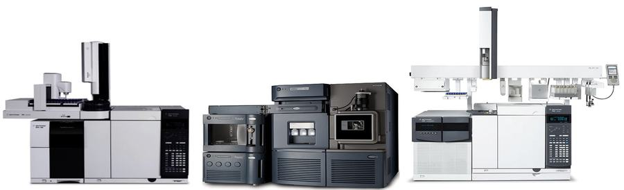

Plant Systems Biology & Metabolomics
- Integrated Omics: Combining metabolomics, transcriptomics, and flux analysis to map the regulatory networks of plant metabolism under shifting environments.
- Abiotic Stress Mechanisms: Investigating how plants perceive and signal responses to extreme heat, drought, and salinity, focusing on metabolic acclimation and water-use efficiency (WUE).
- Resource Partitioning: Analyzing how environmental stress reconfigures the distribution of carbon and nitrogen between plant defense and productivity in desert ecosystems.